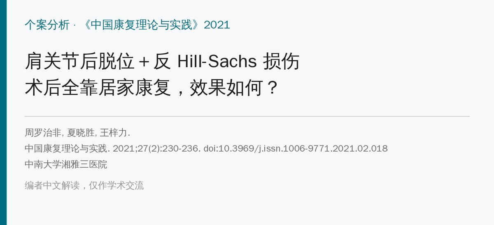
🔖原文信息（编者重排）
📚 文献信息
▪ 周罗治非, 夏晓胜, 王梓力. 肩关节后脱位并发反 Hill-Sacks 损伤术后居家康复训练个案分析[J]. 中国康复理论与实践, 2021, 27(2): 230-236. doi:10.3969/j.issn.1006-9771.2021.02.018
▪ 作者单位：中南大学湘雅三医院
▪ 文章类型：个案分析（1 例，随访 10 个月）
• 44 岁粉刷工，癫痫发作后右肩后脱位并发反 Hill-Sachs 损伤，当地正位片漏诊 2 周
• 关节镜下复位＋肩胛下肌填塞（McLaughlin 术）后，完全在家康复：出院前床旁教 4 次，带纸质方案回家，远程答疑，定期门诊复评
• 四阶段方案：外展外旋位支具 8 周，前 8 周禁止内收、内旋
• 6 个月时前屈、外展、外旋恢复正常，肌力 5 级、不痛，改良 Rowe 评分 16 → 91 分，回到粉刷工作；10 个月时 93 分
• 但只有 1 例，主动内旋 10 个月仍只到 L1
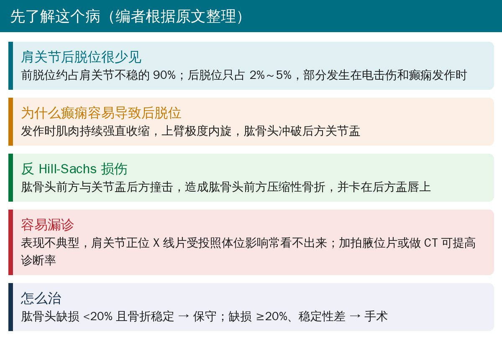
🔖背景（编者根据原文整理）
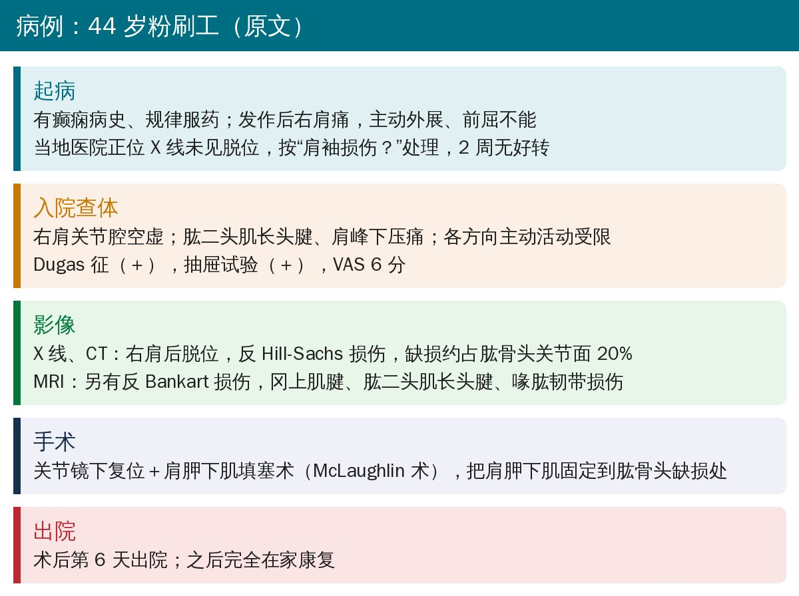
🔖病例经过（据原文整理）
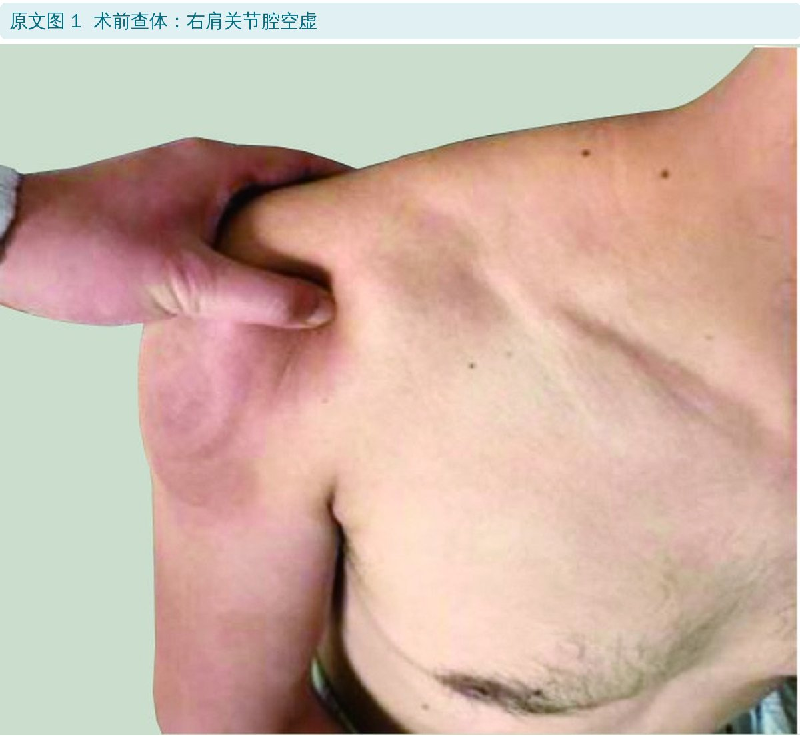
🔖原文图 1：术前查体，右肩关节腔空虚
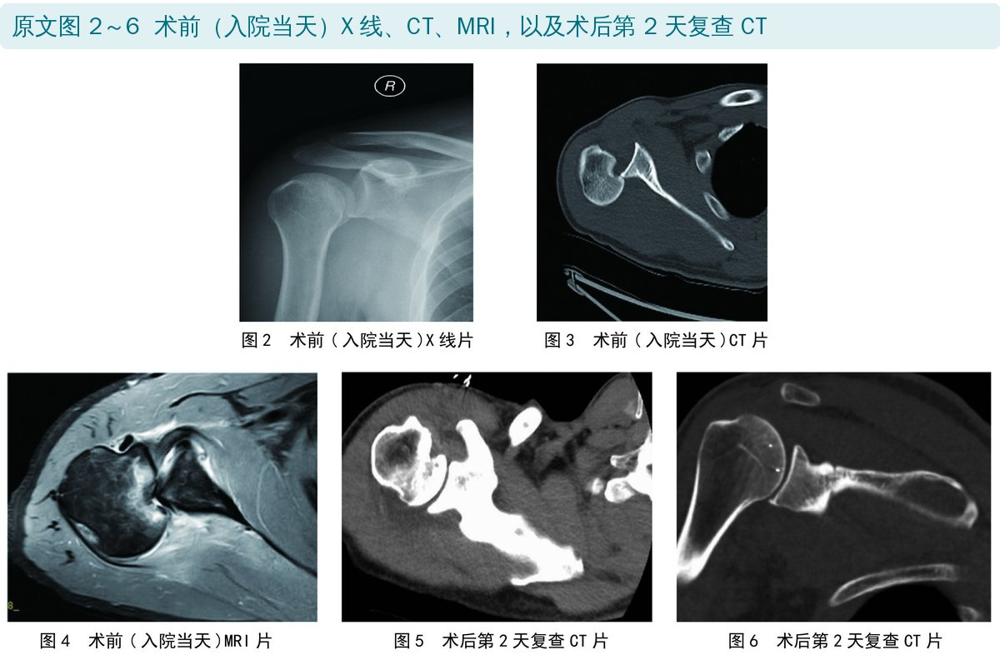
🔖原文图 2～6：术前 X 线、CT、MRI 和术后第 2 天复查 CT
缺损约占肱骨头关节面的 20%、稳定性差，正好落在手术指征（≥20%）上，所以选择了关节镜下 McLaughlin 术：把肩胛下肌固定到肱骨头缺损处，填住这个“坑”，防止肱骨头再卡回去。
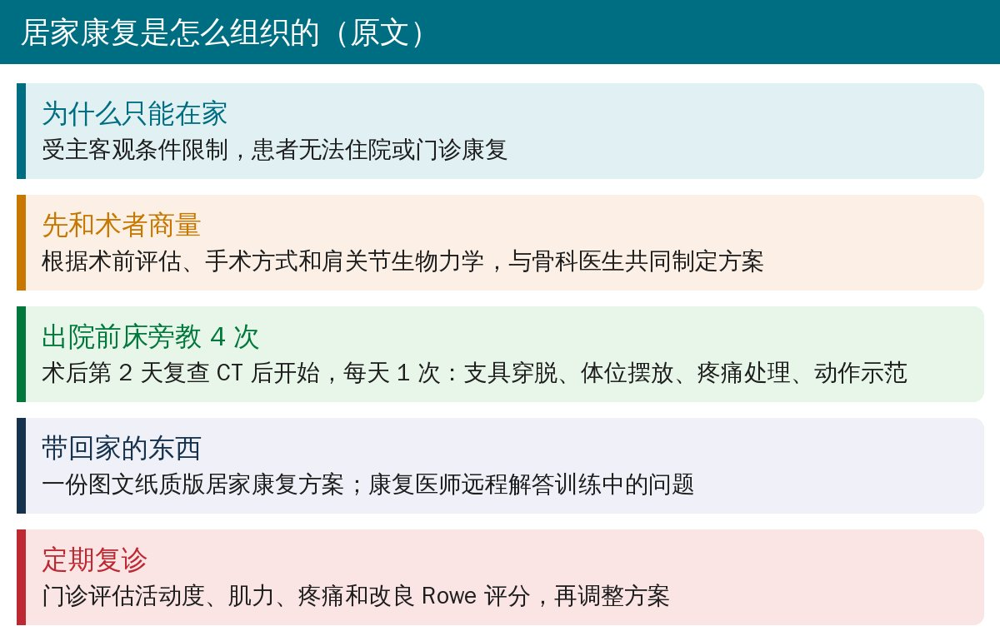
🔖居家康复的组织方式（据原文整理）
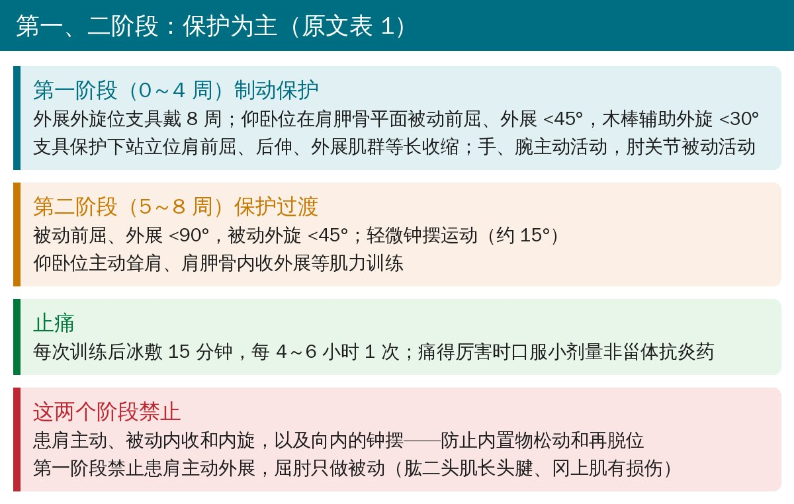
🔖第一、二阶段（据原文表 1 整理）
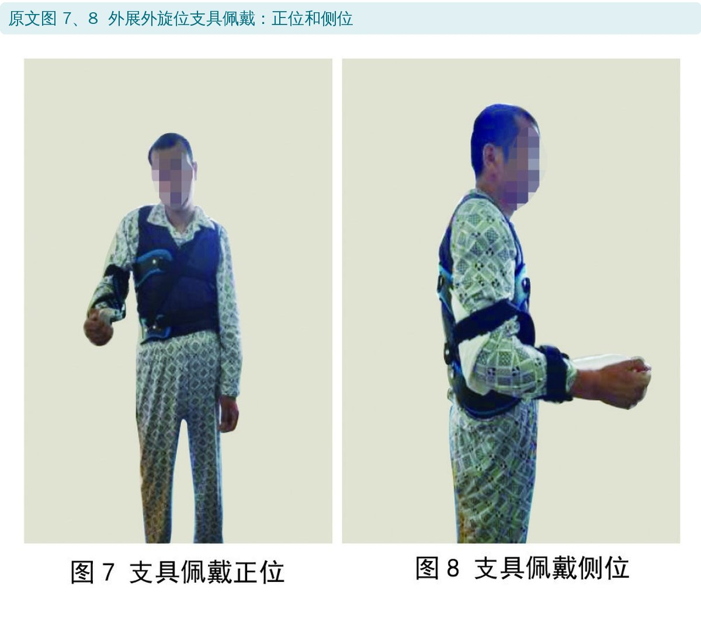
🔖原文图 7、8：外展外旋位支具
为什么固定在外展外旋位？作者解释：软组织愈合前，肱骨在肩胛骨平面、盂肱关节中间位（前屈 45°、外展 45°）时软组织张力最小；超出肩胛平面会增加再脱位风险；软组织愈合需要 6～8 周。再加上本例合并韧带和肩袖损伤，所以支具戴满 8 周，第二阶段的被动活动也限制在肩胛骨平面内。
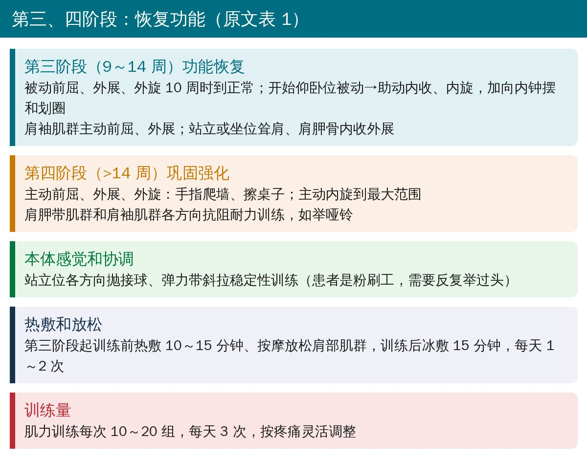
🔖第三、四阶段（据原文表 1 整理）
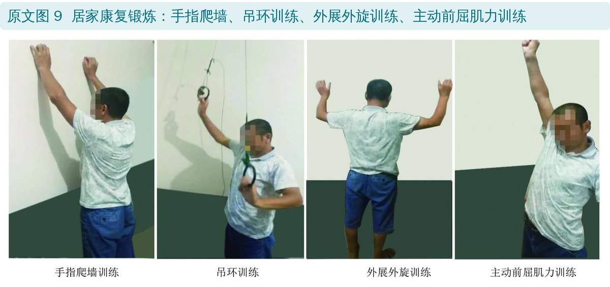
🔖原文图 9：居家康复锻炼
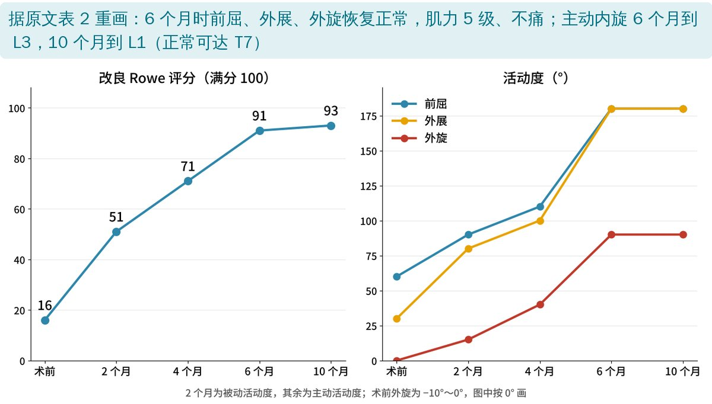
🔖恢复曲线（据原文表 2 重画）
原文表 2（上）：活动度
| 时间 | 前屈 | 外展 | 外旋 | 内旋 |
|---|---|---|---|---|
| 术前（主动） | 0～60° | 0～30° | −10～0° | 腰骶部 |
| 2 个月（被动） | 0～90° | 0～80° | 0～15° | 股骨粗隆下 |
| 4 个月（主动） | 0～110° | 0～100° | 0～40° | 骶尾部 |
| 6 个月（主动） | 0～180° | 0～180° | 0～90° | L3 |
| 10 个月（主动） | 0～180° | 0～180° | 0～90° | L1 |
原文表 2（下）：肌力、疼痛和功能
| 时间 | 肌力 | VAS | 改良 Rowe |
|---|---|---|---|
| 术前 | 未测 | 6 | 16 |
| 2 个月 | 2 级 | 4 | 51 |
| 4 个月 | 4 级 | 0 | 71 |
| 6 个月 | 5 级 | 0 | 91 |
| 10 个月 | 5 级 | 0 | 93 |
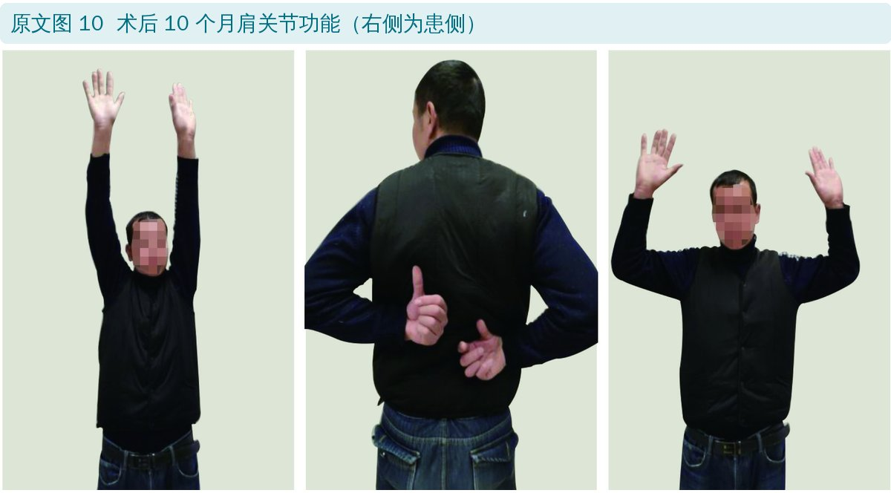
🔖原文图 10：术后 10 个月肩关节功能（右侧为患侧）
2 个月时被动外旋只有 15°，作者认为与患者担心外旋会影响肩胛下肌愈合、练得太保守有关，后期经过心理疏导和强化训练明显改善。10 个月时主动内旋只到 L1（正常可达 T7），作者认为与肩胛下肌填入缺损后内旋力臂缩短有关。
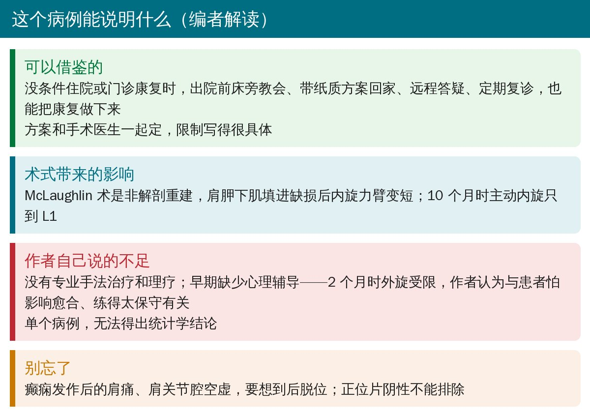
🔖编者解读
• 单个病例，无法和住院或门诊康复比较；作者也提到缺乏专业手法治疗、理疗和早期心理辅导
• 患者是体力劳动者、癫痫控制良好，结果不一定适用于其他人群
• 优点：方案按周期写得非常具体，禁忌动作和理由都写清楚了，可直接参考
• 中文标题和正文写作“Hill-Sacks”，英文标题写作“Hill-Sachs”（后者为正确拼写）
• 表 2 中术后 2 个月记录的是被动活动度，其余时间点是主动活动度，不能直接连成一条曲线比较
• 癫痫发作或电击后的肩痛、肩关节腔空虚、外旋受限，要想到后脱位；正位片阴性时加拍腋位片或做 CT
• McLaughlin 术后：外展外旋位支具约 8 周，前 8 周禁止内收、内旋和向内钟摆；被动活动先限制在肩胛骨平面内
• 第 9 周后再加内旋和肩袖主动训练，14 周后抗阻、本体感觉和抛接球
• 居家康复要有书面方案、远程答疑和定期复评；留意患者“不敢练”的心理
欢迎关注骨科康复小黄公众号，获取更多物理治疗的专业知识！
📄参考文献：
周罗治非, 夏晓胜, 王梓力. 肩关节后脱位并发反 Hill-Sacks 损伤术后居家康复训练个案分析[J]. 中国康复理论与实践, 2021, 27(2): 230-236.
原文未见开放获取许可声明，版权归原作者及期刊所有。本文为非商业的学术交流解读：原文图 1～10 引自原文，图像未作修改；恢复曲线图由编者根据原文表 2 重画，整理卡为编者根据原文撰写。仅供学习交流，如有侵权请联系删除。